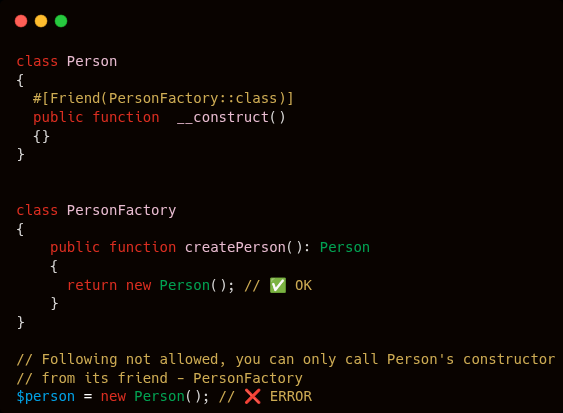

September 27th 2025 software design static analysis open source

Have you ever used creational design patterns to create objects in PHP? (E.g. a Factory or a Builder.)
If so, you'll probably want to ensure that the object is not created by using the new keyword. Instead, you'll want to enforce the object is only created by the relevant creational code.
But how can this be enforced?
PHP’s standard visibility modifiers (public, protected, private) aren’t fine-grained enough to enforce this.
The good news is that, with the PHP language extensions library, there’s now a way to be stricter about who can call a constructor or method. Enter the #[Friend] attribute.
Let’s start with a simple Person class:
class Person
{
public function __construct(
private string $name,
) {}
public function getName(): string
{
return $this->name;
}
}
And a PersonFactory:
class PersonFactory
{
public function createPerson(string $name): Person
{
// Imagine validation or other setup here
return new Person($name);
}
}
The intent is that all Person objects are created through the PersonFactory. But nothing stops someone doing this:
$direct = new Person('Bob'); // Bypasses the factory
Other languages, like C++, have a concept of friends. A class or method can declare that only certain other classes are allowed to call it.
That’s exactly what we need here. By making the Person constructor a “friend” of PersonFactory, we can enforce the correct creation path.
class Person
{
#[Friend(PersonFactory::class)]
public function __construct(
private string $name,
) {}
public function getName(): string
{
return $this->name;
}
}
Now, if anyone tries to call new Person('Bob') outside of PersonFactory, static analysis (e.g. via PHPStan) will complain with this error:
Cannot call Person::__construct() from Demo.
It can only be called from its friend: PersonFactory.
This approach has some clear upsides:
There are some caveats too:
The #[Friend] attribute gives us a way to enforce creational design patterns directly in our codebase.
Instead of relying purely on documentation or developer discipline, we can move the rule into code, where it belongs. Factories and builders exist for a reason and with #[Friend], we can make sure they’re always used.